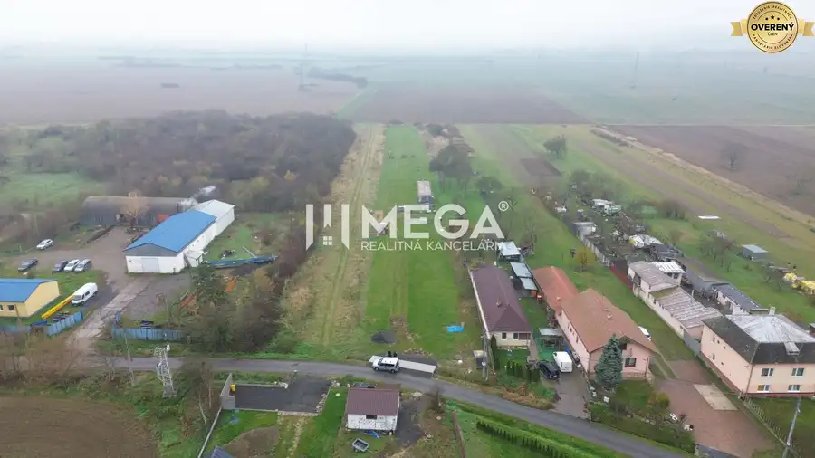
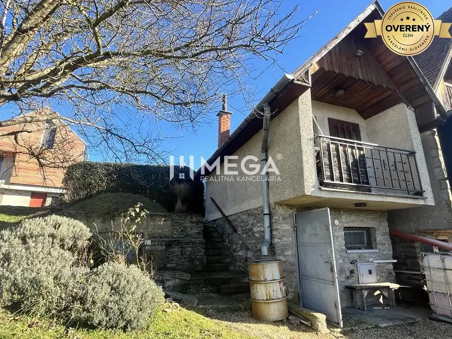
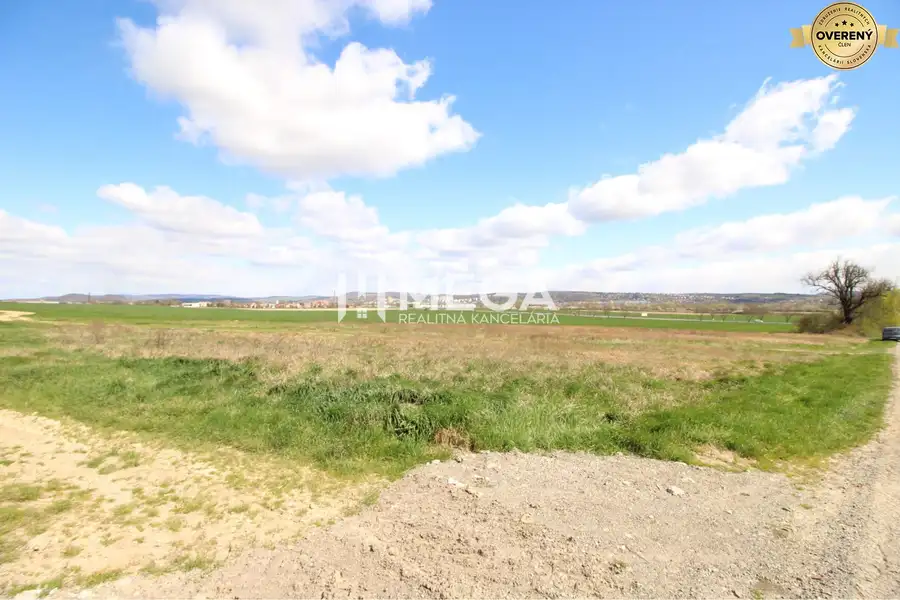

NA PREDAJ: Pozemok na bytovú výstavbu – Mokrance
Okolie, Mokrance
- Plocha3939 m²
- Vlastníctvoosobné
O nehnuteľnosti
Mega realitná kancelária predstavuje investičnú príležitosť – pozemok v Mokranciach pri Košiciach, určený na bytovú výstavbu.
Lokalita:
- Mokrance, okr. Košice-okolie: Tiché prostredie, kombinácia vidieckej atmosféry s výhodami mestského života. Obce ako Mokrance často ponúkajú väčší pokoj, priestor, prírodu, čo je pre mnohých kupujúcich veľká pridaná hodnota.
Popis pozemku:
- Výmera: 3 939 m²
- Typ: individuálna bytová výstavba podľa platného Územného plánu
- Tvar a orientácia: rovinatý, bez nutnosti nákladných terénnych úprav
Inžinierske siete: V blízkosti parcely sú dostupné hlavné siete (elektrina, voda, plyn, ) - rýchle napojenie možné, minimalizácia časových a finančných prekážok.
Prístupová cesta: Asfaltová hlavná cesta - zabezpečený komfortný prístup aj pre stavebné vozidlá, jednoduchý prístup bez problémov v každom ročnom období.
Výhody lokality:
- Blízkosť Košíc - výmena medzi mestom a prírodou, možnosť bývať blízko pracovných príležitostí, škôl a služieb.
- Rastúci záujem o nové výstavby v tejto oblasti – developerom sa otvára potenciál na realizáciu viacero projektov.
- Územný plán explicitne umožňuje výstavbu – eliminuje riziká spojené s administratívou pre zmenu územného využitia.
- Všetky výhody rovinatého terénu – úspora pri príprave stavby (zemné práce, drenáž, spevnenie podložia).
Cena: 86,31€/m²
Preferujeme hotovostného klienta, najmä developerov – možnosť rýchlejšieho uzavretia obchodu, minimálne komplikácie.
V cene nehnuteľnosti je zahrnuté:
- Kompletný právny servis,
- Vypracovanie zmluvy,
- Poplatky spojené s prevodom vlastníckych práv
- Vybavenie financií na kúpu nehnuteľnosti.
Kontakt:
Gabriel Džupin
Tel.:
Email:
Prečo si vybrať práve MEGA realitnú kanceláriu?
- Skúsený tím profesionálov: Radi Vám poradíme a pomôžeme s výberom vašej vysnívanej nehnuteľnosti.
- Komplexné služby: Od obhliadky až po prevod vlastníckych práv.
- Členstvo v ZRKS (Združenie realitných kancelárií Slovenska): Záruka kvality a dodržiavanie etických princípov.
Nezmeškajte túto príležitosť a informujte sa ešte dnes.
Parametre
| Dátum zverejnenia | 30. 9. 2026 |
|---|---|
| Rozloha pozemku | 3939 m² |
| Terén | rovina |
| Vlastníctvo | osobné |
Kde to je
Mohlo by Vás zaujímať

PozemokNové9 25 500 €Exkluzívne na predaj Investičný pozemok v obci Pusté Čemerné Pusté Čemerné 3940 m² Mega Realitná kancelária ponúka exkluzívne na predaj investičný pozemok o výmere 3940 m² v obci Pusté Čemerné, okres Vranov nad Topľou. Táto…
Rodinné domyNové7 38 000 €Na predaj chata s vinicou a 2 pivnicami, obec Viničky-Zajačí skok, okr Viničky 1295 m² MEGA realitná kancelária Vám ponúka na predaj chatku s vinicou a 2 pivnicami neďaleko Grand Bari v Tokajskej oblasti v katastri obce Viničky tzv.…
PozemokNové6 209 900 €NA PREDAJ: Veľkorysý stavebný pozemok s výhľadom na Vranov Vranov nad Topľou 2752 m² MEGA Realitná kancelária ponúka na predaj jedinečný pozemok o výmere 2 752 m², situovaný v novo vznikajúcej susedskej lokalite medzi obcami Čemerné a…